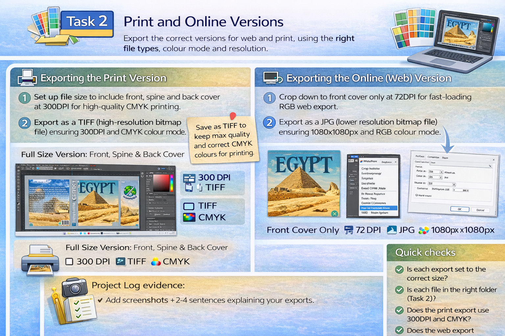
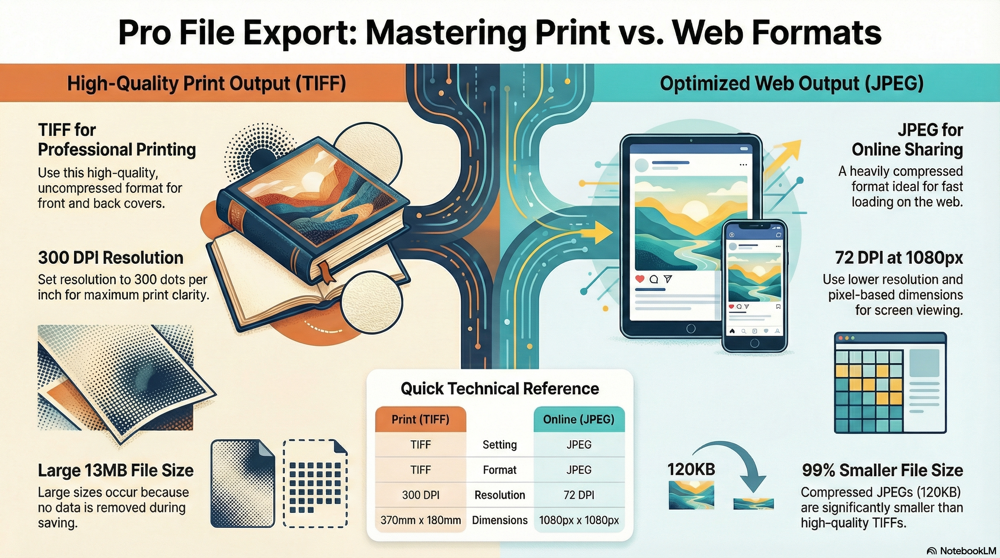

Print and Online Versions
Export the correct versions for web and print, using the right file types, colour mode and resolution.
Task 1
Step 13
Preparing Print and Online Versions
Watch this walkthrough showing how to correctly prepare and export print and online versions of your product.
Watch: Understanding the difference between Print and Screen versions
This video explains why you must export different versions for print and online, including colour mode, resolution and file types.

Print vs Screen guidance slides (PDF)
Use these slides as a checklist when exporting your final versions.